| Image | Main Description | Sub - Description | Tied | Special Attributes | Location | Value |
 |
Axe |
Throwing axe | Y | Off. adds (+6), throwing | KM | - |
| Enormous blood stained double-bladed axe with silver dipped blades (Frore minotaur) | Y | Off. adds (+3), evil | Frore | - | ||
| Y | Off adds +4 Throwing Glowing | KM-5 | ||||
| - | Silver axe | - | Off. adds (+3) | - | - | |
 |
Steel axe with a wooden haft, Quest item Ratburrow (from Darkguard) | N | Off. adds (+1) | -3.5 Nork | 500 | |
 |
Steel greataxe with a wooden haft, Quest item (from minotaur) | Y | Off. adds (+1) | -3.5 Nork | 800 | |
 |
Broadsword | Evil broadsword | Y | Off. adds (+5), evil | Uther | - |
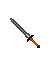 |
Iron broadsword | N | Off. adds (+4) | Fate Pools | - | |
 |
Club | A massive wooden club, soiled with blood and pieces of dried flesh | Y | Push (lvl 9) | -3.5 Nork | 750 |
| Y | Off.. adds (3), amber glow | Badlands | 1'500 | |||
 |
Crossbow | Heavy crossbow | N | - | Nork town | 100 |
| Heavy crossbow. It is bathed in a faint amber glow | N | - | -3 Nork | 100 | ||
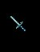 |
Dagger | Long steel dagger with small white doves engraved along the hilt | N | Off. adds (+3) | East of Maeling | 1'500 |
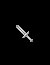 |
Silver dagger with a small blood grove | Y | Off. adds (+2) | Nork town | 200 | |
| Y | Off. adds (+4) | VT town | - | |||
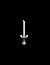 |
Silver poison stiletto | Y | Off. adds (+6), poison | Breshard | - | |
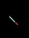 |
Small steel bladed tanto | N | - | Maeling town | 10 | |
| Small steel bladed tanto. The tanto is labelled Lightning. It is bathed in a faint amber glow | N | Lightning (lvl 8), Off. adds (+4) | Maeling town | 500 | ||
| Y | Maeling -4 | |||||
| Steel dagger | N | - | -1 Nork | 10 | ||
| N | Off. adds (+5) | - | - | |||
| - | Steel returning throwing dagger | N | Off. adds (+3), throwing | Badlands | - | |
 |
Dart | An amazingly light, perfectly balanced throwing dart | N | - | -3.5 Nork | 10 |
 |
Flail | Long black rod with 3 steel balls attached by chains | N | - | -1 Nork | 201 |
| - | Greatsword | Excalibur | - | Earthcrush, Off. adds (+6) | - | - |
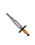 |
Iron greatsword | N | - | -3 Nork | 150 | |
| Iron greatsword. It is bathed in a faint amber glow | Y | Off. adds (+2) | -3 Nork | 150 | ||
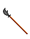 |
Long wooden pole with a double blade near the top | N | - | Maeling town | 201 | |
| N | Off. adds (+4) | Maeling Town | 201 | |||
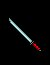 |
Large two handed nodachi with a long wide blade | N | - | Maeling town | 150 | |
| N | Off. adds (+3) | - | - | |||
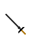 |
Meteoric iron slicer | Y | Off. adds (+3) | Slicer | - | |
 |
Halberd | Heavy wooden pole with a long thin blade near the top | N | - | Nork town | 175 |
|
Silver glowing halberd | N | Off. adds (+4) | Prison | - | |
| N | Off. adds (+5) | Hally Giant | - | |||
| N | Off. adds (+6) | Fire Giant | - | |||
 |
Silver Halberd | Y | Off.Adds(+5) | KM-5 | - | |
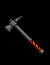 |
Hammer | Large warhammer with intricate writing on it's smooth top | N | - | Nork town | 201 |
| N | Off. adds (+3) | - | - | |||
| - | Silver returning hammer | Y | Off. adds (+4), lightning | - | - | |
| Y | Off. adds (+6) | - | - | |||
 |
Steel throwing hammer with blazing straks along the side. It is bathed in a faint amber glow | Y | Lightning (lvl 5), Off. adds (4) | Maeling Town | 5'000 | |
 |
Tarak Hammer | Y | Blast | Aleria | - | |
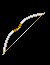 |
Longbow | Composite longbow | Y | Off. adds (+4) | Fishery archers | - |
 |
Pine longbow | N | - | Nork town | 190 | |
| Silver longbow | Y | Off. adds (+3) | Griffon quest | - | ||
| Y | Off. adds (+6) | KM-4 | - | |||
| Ornately carved composite silver longbow string with a silvery cord | Y | Off. adds (4) | VT Fishery | 2'000 | ||
| Y | Off. adds (6) | - | - | |||
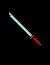 |
Longsword | Folded-steel katana with a long thin blade | Y | - | Maeling town | 100 |
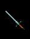 |
Hardened steel longsword with 3 circular gems set in the hilt | Y | Off. adds (+2) | Maeling town | - | |
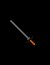 |
Iron longsword | N | - | Nork town | 100 | |
 |
Massive steel blade scriped with ancient oriental carvings. It is bathed in a faint amber glow | N | Off. adds (+4), Evil | -3 Maeling | 100 | |
| Y | Off. adds (+5), Neutral | -4 Maeling | - | |||
| Meteoric Iron slicer | Y | Off. adds (+4) | Slicer | - | ||
 |
Silver longsword | Y | Off. adds (+3) | Griffen | - | |
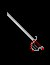 |
Silver saber | Y | Off. adds (+6) | Frore | - | |
 |
Mace | Footman's mace | N | Off. adds (+3) | Maeling town | 50 |
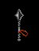 |
Horseman's mace | N | - | Nork town | 50 | |
| Horseman's mace. It is bathed in a faint amber glow | N | Off. adds (+1) | -2 Nork | 50 | ||
| Horseman's mace. It is bathed in a faint amber glow | N | Off. adds (+3) | - | - | ||
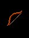 |
Shortbow | Wooden shortbow | N | - | Nork town | 90 |
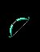 |
Poison shortbow | Y | Off. adds (+3), poison | -5 Nork | - | |
| - | Majorin shortbow | - | Off. adds (+6) | - | - | |
 |
Shortsword | Folded-steel kenuki with a short steel blade | N | - | Maeling town | 50 |
 |
Iron shortsword | N | - | Nork town | 50 | |
 |
Staff | Wooden staff | N | - | Nork town | 2 |
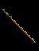 |
Long open staff with large strips of metal embedded near the tip | Y | Off. adds (+2) | Maeling town | 12'200 | |
 |
Glowing black staff | N | Off. adds (+3) | VT Fishery | - | |
| - | Glowing steel staff | Y | Off. adds (+6), top mentalist staff! | Frore Caves | - | |
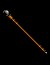 |
Healer Staff | Y | +4 wisdom | Slith | - |
Thanks to Zand
Weapon Overview
There are many kinds of weapons available in Drakkar. Some are nearly worthless while others can be used by the highest level characters in the toughest dungeon areas. Some weapons GLOW or are made of SILVER which makes them more valuable since some monsters can only be damaged by certain types. There are also special qualities embedded into weapons that determine how often they stun/prone and how well they block and strike. Weapons have two main components that determine how hard they will hit at a given skill level. The hit die is the basic number rolled for damage and is the main factor for damage, while 'ADDS' increase damage a modest amount and affect how often you do hit, rather than being blocked or miss your target. It is quite possible and common for a large weapon with a large hit die and few adds to hit much harder than a small weapon with a small hit die and large adds. The best weapons in the game are those with both a large hit die and high combat adds.
The weapons can be divided into 4 Quality Levels. These are:
A
These are the top of the line 'quest' weapons of each particular skill type. They have the largest damage potential, at least 3 combat adds and are used by the largest game characters in the most dangerous playing areas and lairs. These weapons require some major lair monster/npc in order to be acquired and are not found as random treasure.
B
These weapons have decent power and adds and may be used by mid-level characters for most of the game but lack the top-end 'awesome' power that is required for the high end game where players need to hit for hundreds of points of damage per swing.
C
These weapons are similar to the common class D weapons but have 1 to 3 adds on them and may occasionally even glow. They hit a bit harder but their basic hit die is much to small to be used in very tough areas or by high level characters.
D
These are those plain no-add wood/iron weapons sold in Nork Town stores and found on the floor of -1 Nork. These are common, cheap, and suitable only for the tiny new game characters. They have small hit dies and no combat adds.
| Weapon type (by damage potential of weapon type) |
Weapon subclass | Quality lvl |
| Dart | 0 | D |
| +2 | C | |
| Dagger | 0 | D |
| +3, steel, returning, throwing | C | |
| +4, silver | C | |
| +4, lightning, tanto | B | |
| +5 | B | |
| +6, silver, poison | A | |
| Gauntlets | 0 | D |
| +2 | C | |
| +3, dragon | C | |
| +4 | B | |
| +4, quest | A | |
| +5, gripclaw | A | |
| Shortbow | 0 | D |
| +3, poison | A | |
| +6, majorin | B | |
| Longbow | 0 | D |
| +3, silver | C | |
| +4, composite | B | |
| +6, silver | B | |
| Crossbow | 0 | D |
| Staff | 0 | D |
| +2, wooden | C | |
| +3, glowing, black | B | |
| +6, glowing, steel | A | |
| Spear | 0 | D |
| Flail | 0 | D |
| Mace | 0 | D |
| +3, footman's | C | |
| Hammer | 0 | D |
| +3 | C | |
| +4, silver, returning | B | |
| +6, silver, returning | A | |
| Shortsword | 0 | D |
| +2, kenuki | C | |
| Longsword | 0 | D |
| +2, steel | C | |
| +3, silver | C | |
| +4, evli, katana | B | |
| +4, meteoric, silver, slicer | A | |
| +6, silver, saber | A | |
Broadsword |
0 | D |
| +4, iron | B | |
| +5, evil | B | |
| Greatsword | 0 | D |
| +3, nodachi | C | |
| +4, bisento | B | |
| +3, meteoric, iron, slicer | A | |
| +6, earthcrush, excalibur | A | |
| Axe | 0 | D |
| +3, evil, silver | C | |
| +3, silver | B | |
| +6, throwing | A | |
| Halberd | 0 | D |
| +4, silver, glowing | B | |
| +5, silver, glowin | A | |
| +6, silver glowing | A |